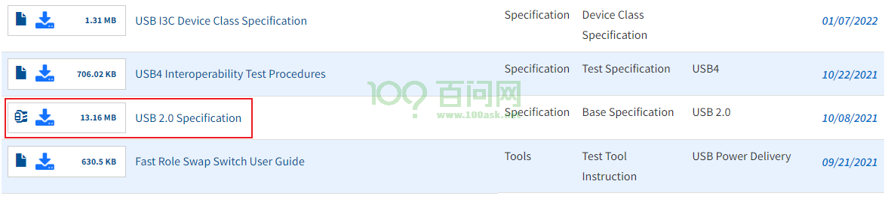
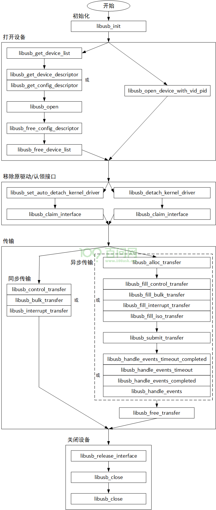

06_libusb的使用#
参考资料：
《圈圈教你玩USB》
简书jianshu_kevin@126.com的文章
官网：https://www.usb.org/documents

libusb GIT仓库：https://github.com/libusb/libusb.git
libusb 官网：https://libusb.info/
libusb API接口：https://libusb.sourceforge.io/api-1.0/
libusb 示例：https://github.com/libusb/libusb/tree/master/examples
1. 概述#
1.1 介绍#
libusb是一个使用C编写的库，它提供USB设备的通用的访问方法。APP通过它，可以方便地访问USB设备，无需编写USB设备驱动程序。
可移植性：支持Linux、macOS、Windows、Android、OpenBSD等
用户模式：APP不需要特权模式、也不需要提升自己的权限即可访问USB设备
支持所有USB协议：从1.0到3.1都支持
libusb支持所有的传输类型(控制/批量/中断/实时)，有两类API接口：同步(Synchronous，简单)，异步(Asynchronous，复杂但是更强大)。它是轻量级的、线程安全的。还支持热拔插。
1.2 用法#
可以通过libusb访问USB设备，不需要USB设备端的驱动程序，需要移除原来的驱动程序。然后就可以直接访问USB控制器的驱动程序，使用open/read/write/ioctl/close这些接口来打开设备、收发数据、关闭设备。 libusb封装了更好用的函数，这些函数的使用可以分为5个步骤：
初始化
打开设备
移除原驱动/认领接口
传输
关闭设备

2. API接口#
2.1 分类#
libusb的接口函数分为两类：同步(Synchronous device I/O)、异步(Asynchronous device I/O)。
USB数据传输分为两个步骤，对于读数据，先给设备发出数据的请求，一段时间后数据返回；对于写数据，先发送数据给设备，一段时间后得到回应。
同步接口的核心在于把上述两个步骤放在一个函数里面。比如想去读取一个USB键盘的数据，给键盘发出读请求后，如果用户一直没有按下键盘，那么读函数会一直等待。
异步接口的核心在于把上述两个步骤分开：使用一个非阻塞的函数启动传输，它会立刻返回；提供一个回调函数用来处理返回结果。
同步接口的示例代码如下，在libusb_bulk_transfer函数内部，如果没有数据则会休眠：
unsigned char data[4];
int actual_length;
int r = libusb_bulk_transfer(dev_handle, LIBUSB_ENDPOINT_IN, data, sizeof(data), &actual_length, 0);
if (r == 0 && actual_length == sizeof(data)) {
// 接收到的数据保存在data数组里
// 解析这些数据就可以知道按键状态
} else {
error();
}
使用同步接口时，代码比较简单。但是无法实现”多endpoint”的操作：上一个endpoint的传输在休眠，除非使用另一个线程，否则在同一个线程内部在等待期间是无法操作另一个endpoint的。还有另一个缺点：无法取消传输。
异步接口是在libusb-1.0引入的新性能，接口更复杂，但是功能更强大。在异步接口函数里，它启动传输、设置回调函数后就立刻返回。等”读到数据”或是”得到回应”后，回调函数被调用。发起数据传输的线程无需休眠等待结果，它支持”多endpoint”的操作，也支持取消传输。
2.2 初始化/反初始化#
/** \ingroup libusb_lib
* 初始化libusb，这个函数必须先于其他libusb的函数执行
*
* 如果传入NULL，那么函数内部会穿件一个默认的context
* 如果已经创建过默认的context，这个context会被重新使用(不会重新初始化它)
*
* 参数：
* ctx : context pointer的位置，也可以传入NULL
* 返回值
* 0 - 成功
* 负数 - 失败
*/
int API_EXPORTED libusb_init(libusb_context **ctx);
初始化libusb，参数是一个”a context pointer”的指针，如果这个参数为NULL，则函数内部会创建一个”default context”。所谓”libusb context”就是libusb上下文，就是一个结构体，里面保存有各类信息，比如：libusb的调试信息是否需要打印、各种互斥锁、各类链表(用来记录USB传输等等)。
程序退出前，调用如下函数：
/** \ingroup libusb_lib
* 发初始化libusb
* 在关闭usb设备(libusb_close)后、退出程序前调用此函数
*
* 参数:
* ctx : context, 传入NULL表示default context
*/
void API_EXPORTED libusb_exit(libusb_context *ctx);
2.3 获取设备#
可以使用libusb_get_device_list取出所有设备，函数接口如下：
/** @ingroup libusb_dev
* 返回一个list，list里含有当前系统中所有的USB设备
*
* 我们一般会在list里寻找需要访问的设备，找到之后使用libusb_open函数打开它
* 然后调用libusb_free_device_list释放list
*
* 这个函数的返回值表示list中有多少个设备
* list的最后一项是NULL
*
* 参数:
* ctx : context
* list : output location for a list of devices, 最后必须调用libusb_free_device_list()来释放它
* 返回值: list中设备的个数, 或错误值
*/
ssize_t API_EXPORTED libusb_get_device_list(libusb_context *ctx,
libusb_device ***list);
调用此函数后，所有设备的信息存入list，然后遍历list，找到想操作的设备。这个函数内部会分配list的空间，所以用完后要释放掉，使用以下函数释放：
/** \ingroup libusb_dev
* 前面使用libusb_get_device_list()获得了设备list,
* 使用完后要调用libusb_free_device_list()释放这个list
* 如果参数unref_devices为1, 则list中每个设备的引用计数值减小1
* 参数:
* list : 要释放的设备list
* unref_devices : 是否要将设备的引用计数减1
*/
void API_EXPORTED libusb_free_device_list(libusb_device **list,
int unref_devices);
2.4 打开/关闭设备#
使用libusb_get_device_list得到设备列表后，可以选择里面的某个设备，然后调用libusb_open：
/** \ingroup libusb_dev
* 打开一个设备并得到它的句柄, 以后进行IO操作时都是使用句柄
*
* 使用libusb_get_device()函数可以得到设备的list,
* 从list里确定你要访问的设备后, 使用libusb_open()去打开它。
* libusb_open()函数内部会增加此设备的引用计数, 使用完毕后要调用libusb_close()减小引用计数。
*
* 参数:
* dev : 要打开的设备
* dev_handle : 输出参数, 用来保存句柄
* 返回值:
* 0 - 成功
* LIBUSB_ERROR_NO_MEM : 缺少内存
* LIBUSB_ERROR_ACCESS : 权限不足
* LIBUSB_ERROR_NO_DEVICE : 这个设备未连接
* 其他错误 : 其他LIBUSB_ERROR错误码
*/
int API_EXPORTED libusb_open(libusb_device *dev,
libusb_device_handle **dev_handle);
使用libusb_open函数打开USB设备后，可以得到一个句柄：libusb_device_handle。以后调用各种数据传输函数时，就是使用libusb_device_handle。
使用完毕后，调用libusb_close关闭设备，函数原型如下：
/** \ingroup libusb_dev
* 关闭设备句柄, 在程序退出之前应该使用它去关闭已经打开的句柄
*
* 设备的引用计数在前面被libusb_open()函数增加了。
* 在libusb_close()函数的内部，它会减小设备的引用计数。
*
* 参数: dev_handle - 句柄
*/
void API_EXPORTED libusb_close(libusb_device_handle *dev_handle);
2.5 根据ID打开设备#
如果知道设备的VID、PID，那么可以使用libusb_open_device_with_vid_pid来找到它、打开它。这个函数的内部，先使用libusb_get_device_list列出所有设备，然后遍历它们根据ID选出设备，接着调用libusb_open打开它，最后调用libusb_free_device_list释放设备。
libusb_open_device_with_vid_pid函数原型如下：
/** \ingroup libusb_dev
* 打开设备的常规做法是使用libusb_get_device_list()得到设备list，
* 然后遍历list，找到设备
* 接着使用libusb_open()函数得到句柄
*
* 如果知道USB设备的VID、PID，那么可以使用libusb_open_device_with_vid_pid()函数快速打开它，得到句柄。
*
* 这个函数有一个缺点: 如果系统中有多个ID相同的设备，你只能打开第1个设备
*
* 参数:
* ctx : context, 或者传入NULL以使用默认的context
* vendor_id : 厂家ID
* product_id : 产品ID
*
* 返回值:
* 句柄 - 找到的第1个设备的句柄
* NULL - 没有找到设备
*/
DEFAULT_VISIBILITY
libusb_device_handle * LIBUSB_CALL libusb_open_device_with_vid_pid(
libusb_context *ctx, uint16_t vendor_id, uint16_t product_id);
2.6 描述符相关函数#
2.6.1 获得设备描述符#
/** \ingroup libusb_desc
* 获得设备描述符
*
* 参数:
* dev - 哪个设备
* desc - 输出参数, 用来保存设备描述符
*
* 返回值:
* 0 - 成功, 或其他LIBUSB_ERROR错误码
*/
int API_EXPORTED libusb_get_device_descriptor(libusb_device *dev,
struct libusb_device_descriptor *desc);
2.6.2 获得/释放配置描述符#
/** \ingroup libusb_desc
* 获得指定的配置描述符
*
* 参数:
* dev - 哪个设备
* config_index - 哪个配置
* config - 输出参数, 用来保存配置描述符, 使用完毕要调用libusb_free_config_descriptor()释放掉
*
* 返回值:
* 0 - 成功
* LIBUSB_ERROR_NOT_FOUND - 没有这个配置
* 其他LIBUSB_ERROR错误码
*/
int API_EXPORTED libusb_get_config_descriptor(libusb_device *dev,
uint8_t config_index, struct libusb_config_descriptor **config);
/** \ingroup libusb_desc
* Free a configuration descriptor obtained from
* 前面使用libusb_get_active_config_descriptor()或libusb_get_config_descriptor()获得配置描述符，
* 用完后调用libusb_free_config_descriptor()释放掉
*/
void API_EXPORTED libusb_free_config_descriptor(
struct libusb_config_descriptor *config);
2.7 detach/attach驱动#
2.7.1 两种方法#
使用libusb访问USB设备时，需要先移除(detach)设备原来的驱动程序，然后认领接口(claim interface)。有两种办法：
方法1：
// 只是设置一个标记位表示libusb_claim_interface // 使用libusb_claim_interface时会detach原来的驱动 libusb_set_auto_detach_kernel_driver(hdev, 1); // 标记这个interface已经被使用认领了 libusb_claim_interface(hdev, interface_number);
方法2：
// detach原来的驱动 libusb_detach_kernel_driver(hdev, interface_number); // 标记这个interface已经被使用认领了 libusb_claim_interface(hdev, interface_number);
2.7.2 函数原型#
函数libusb_detach_kernel_driver原型如下：
/** \ingroup libusb_dev
* 给USB设备的接口(interface)移除驱动程序. If successful, you will then be
* 移除原来的驱动后才能"claim the interface"、执行IO操作
*
* 实际上libusb会给这个接口安装一个特殊的内核驱动,
* 所以本函数"移除驱动"是移除其他驱动，不是移除这个特殊的驱动。
* 若干这个接口已经安装了这个特殊的驱动，本函数会返回LIBUSB_ERROR_NOT_FOUND.
*
* 参数:
* dev_handle - 设备句柄
* interface_number - 哪一个接口
*
* 返回值:
* 0 - 成功
* LIBUSB_ERROR_NOT_FOUND - 这个接口没有安装其他驱动
* LIBUSB_ERROR_INVALID_PARAM - 没有这个接口
* LIBUSB_ERROR_NO_DEVICE - 这个设备未连接
* LIBUSB_ERROR_NOT_SUPPORTED - 系统不支持此操作, 比如Windows
* 其他LIBUSB_ERROR错误码
*/
int API_EXPORTED libusb_detach_kernel_driver(libusb_device_handle *dev_handle,
int interface_number);
函数libusb_claim_interface原型如下：
/** \ingroup libusb_dev
* libusb使用内核里一个特殊的驱动程序，
* libusb_claim_interface()函数就是给某个usb接口安装这个特殊的驱动程序，
* 在使用libusb的函数执行IO操作之前必须调用本函数。
*
* 你可以给"已经claim过的接口"再次调用本函数，它直接返回0。
*
* 如果这个接口的auto_detach_kernel_driver被设置为1，
* libusb_claim_interface()函数会先移除其他驱动。
*
* 本函数时纯粹的逻辑操作：只是替换接口的驱动程序而已，不会导致USB硬件传输。
*
* 参数:
* dev_handle - 句柄, 表示USB设备
* interface_number - 接口
*
* 返回值:
* 0 - 成功
* LIBUSB_ERROR_NOT_FOUND - 没有这个接口
* LIBUSB_ERROR_BUSY - 其他APP或者驱动正在使用这个接口
* LIBUSB_ERROR_NO_DEVICE - 设备未连接
* 其他LIBUSB_ERROR错误码
*/
int API_EXPORTED libusb_claim_interface(libusb_device_handle *dev_handle,
int interface_number);
使用完USB设备后，在调用libusb_close之前，应该libusb_release_interface释放接口：
/** \ingroup libusb_dev
* 前面使用libusb_claim_interface()给接口安装了给libusb使用的特殊驱动程序,
* 使用完毕后，在调用libusb_close()关闭句柄之前，
* 可以调用libusb_release_interface()卸载特殊驱动程序
* 如果设备的auto_detach_kernel_driver为1，还会重新安装普通驱动程序
*
* 这是一个阻塞函数, 它会给USB设备发送一个请求: SET_INTERFACE control,
* 用来把接口的状态复位到第1个setting(the first alternate setting)
*
* 参数:
* dev_handle - 设备句柄
* interface_number - 哪个接口
*
* 返回值:
* 0 - 成功
* LIBUSB_ERROR_NOT_FOUND - 这个接口没有被claim(没有安装特殊的驱动程序)
* LIBUSB_ERROR_NO_DEVICE - 设备未连接
* 其他LIBUSB_ERROR错误码
*/
int API_EXPORTED libusb_release_interface(libusb_device_handle *dev_handle,
int interface_number);
2.8 同步传输函数#
2.8.1 控制传输#
/** \ingroup libusb_syncio
* 启动控制传输
*
* 传输方向在bmRequestType里
* wValue,wIndex和wLength是host-endian字节序
*
* 参数:
* dev_handle - 设备句柄
* bmRequestType - setup数据包的bmRequestType域
* bRequest - setup数据包的bRequest域
* wValue - setup数据包的wValue域
* wIndex - setup数据包的wIndex域
* data - 保存数据的buffer, 可以是in、out数据
* wLength - setup数据包的wLength域
* timeout - 超时时间(单位ms)，就是这个函数能等待的最大时间; 0表示一直等待直到成功
*
* 返回值:
* 正整数 - 成功传输的数据的长度
* LIBUSB_ERROR_TIMEOUT - 超时
* LIBUSB_ERROR_PIPE - 设备不支持该请求
* LIBUSB_ERROR_NO_DEVICE - 设备未连接
* LIBUSB_ERROR_BUSY - 如果这个函数时在事件处理上下文(event handling context)里则返回这个错误
* LIBUSB_ERROR_INVALID_PARAM - 传输的字节超过OS或硬件的支持
* the operating system and/or hardware can support (see \ref asynclimits)
* 其他LIBUSB_ERROR错误码
*/
int API_EXPORTED libusb_control_transfer(libusb_device_handle *dev_handle,
uint8_t bmRequestType, uint8_t bRequest, uint16_t wValue, uint16_t wIndex,
unsigned char *data, uint16_t wLength, unsigned int timeout);
2.8.2 批量传输#
/** \ingroup libusb_syncio
* 启动批量传输
* 传输方向在endpoint的"方向位"里表示
*
* 对于批量读，参数length表示"期望读到的数据最大长度", 实际读到的长度保存在transferred参数里
*
* 对于批量写, transferred参数表示实际发送出去的数据长度
*
* 发生超时错误时，也应该检查transferred参数。
* libusb会根据硬件的特点把数据拆分为一小段一小段地发送出去，
* 这意味着发送满某段数据后可能就发生超时错误，需要根据transferred参数判断传输了多少数据。
*
* 参数:
* dev_handle - 设备句柄
* endpoint - 端点
* data - 保存数据的buffer, 可以是in、out数据
* length - 对于批量写，它表示要发送的数据长度; 对于批量读，它表示"要读的数据的最大长度"
* transferred - 输出参数，表示实际传输的数据长度
* timeout - 超时时间(单位ms)，就是这个函数能等待的最大时间; 0表示一直等待直到成功
*
* 返回值:
* 0 - 成功，根据transferred参数判断传输了多少长度的数据
* LIBUSB_ERROR_TIMEOUT - 超时, 根据transferred参数判断传输了多少长度的数据
* LIBUSB_ERROR_PIPE - 端点错误，端点被挂起了
* LIBUSB_ERROR_OVERFLOW - 溢出，设备提供的数据太多了
* LIBUSB_ERROR_NO_DEVICE - 设备未连接
* LIBUSB_ERROR_BUSY - 如果这个函数时在事件处理上下文(event handling context)里则返回这个错误
* LIBUSB_ERROR_INVALID_PARAM - 传输的字节超过OS或硬件的支持
* 其他LIBUSB_ERROR错误码
*/
int API_EXPORTED libusb_bulk_transfer(libusb_device_handle *dev_handle,
unsigned char endpoint, unsigned char *data, int length,
int *transferred, unsigned int timeout);
2.8.3 中断传输#
/** \ingroup libusb_syncio
* 启动中断传输
* 传输方向在endpoint的"方向位"里表示
*
* 对于中断读，参数length表示"期望读到的数据最大长度", 实际读到的长度保存在transferred参数里
*
* 对于中断写, transferred参数表示实际发送出去的数据长度，不一定能发送完全部数据。
*
* 发生超时错误时，也应该检查transferred参数。
* libusb会根据硬件的特点把数据拆分为一小段一小段地发送出去，
* 这意味着发送满某段数据后可能就发生超时错误，需要根据transferred参数判断传输了多少数据。
*
* 参数:
* dev_handle - 设备句柄
* endpoint - 端点
* data - 保存数据的buffer, 可以是in、out数据
* length - 对于批量写，它表示要发送的数据长度; 对于批量读，它表示"要读的数据的最大长度"
* transferred - 输出参数，表示实际传输的数据长度
* timeout - 超时时间(单位ms)，就是这个函数能等待的最大时间; 0表示一直等待直到成功
*
* 返回值:
* 0 - 成功，根据transferred参数判断传输了多少长度的数据
* LIBUSB_ERROR_TIMEOUT - 超时, 根据transferred参数判断传输了多少长度的数据
* LIBUSB_ERROR_PIPE - 端点错误，端点被挂起了
* LIBUSB_ERROR_OVERFLOW - 溢出，设备提供的数据太多了
* LIBUSB_ERROR_NO_DEVICE - 设备未连接
* LIBUSB_ERROR_BUSY - 如果这个函数时在事件处理上下文(event handling context)里则返回这个错误
* LIBUSB_ERROR_INVALID_PARAM - 传输的字节超过OS或硬件的支持
* 其他LIBUSB_ERROR错误码
*/
int API_EXPORTED libusb_interrupt_transfer(libusb_device_handle *dev_handle,
unsigned char endpoint, unsigned char *data, int length,
int *transferred, unsigned int timeout);
2.9 异步传输函数#
2.9.1 使用步骤#
使用libusb的异步函数时，有如下步骤：
分配：分配一个
libusb_transfer结构体填充：填充
libusb_transfer结构体，比如想访问哪个endpoint、数据buffer、长度等等提交：提交
libusb_transfer结构体启动传输处理事件：检查传输的结果，调用
libusb_transfer结构体的回调函数释放：释放资源，比如释放
libusb_transfer结构体
2.9.2 分配transfer结构体#
/** \ingroup libusb_asyncio
* 分配一个libusb_transfer结构体，
* 如果iso_packets不为0，还会分配iso_packets个libusb_iso_packet_descriptor结构体
* 使用完毕后需要调用libusb_free_transfer()函数释放掉
*
* 对于控制传输、批量传输、中断传输，iso_packets参数需要设置为0
*
* 对于实时传输，需要指定iso_packets参数，
* 这个函数会一起分配iso_packets个libusb_iso_packet_descriptor结构体。
* 这个函数返回的libusb_transfer结构体并未初始化，
* 你还需要初始化它的这些成员:
* libusb_transfer::num_iso_packets
* libusb_transfer::type
*
* 你可以指定iso_packets参数，意图给实时传输分配结构体，
* 但是你可以把这个结构题用于其他类型的传输，
* 在这种情况下，只要确保num_iso_packets为0就可以。
*
* 参数:
* iso_packets - 分配多少个isochronous packet descriptors to allocate
*
* 返回值:
* 返回一个libusb_transfer结构体或NULL
*/
DEFAULT_VISIBILITY
struct libusb_transfer * LIBUSB_CALL libusb_alloc_transfer(
int iso_packets);
2.9.3 填充控制传输#
/** \ingroup libusb_asyncio
* 构造控制传输结构体
*
* 如果你传入buffer参数，那么buffer的前面8字节会被当做"control setup packet"来解析，
* buffer的最后2字节表示wLength，它也会被用来设置libusb_transfer::length
* 所以，建议使用流程如下:
* 1. 分配buffer，这个buffer的前面8字节对应"control setup packet"，后面的空间可以用来保存其他数据
* 2. 设置"control setup packet"，通过调用libusb_fill_control_setup()函数来设置
* 3. 如果是要把数据发送个设备，把要发送的数据放在buffer的后面(从buffer[8]开始放)
* 4. 调用libusb_fill_bulk_transfer
* 5. 提交传输: 调用libusb_submit_transfer()
*
* 也可以让buffer参数为NULL，
* 这种情况下libusb_transfer::length就不会被设置,
* 需要手工去设置ibusb_transfer::buffer、ibusb_transfer::length
*
* 参数:
* transfer - 要设置的libusb_transfer结构体
* dev_handle - 设备句柄
* buffer - 数据buffer，如果不是NULL的话，它前面8直接会被当做"control setup packet"来处理，
* 也会从buffer[6], buffer[7]把length提取出来，用来设置libusb_transfer::length
* 这个buffer必须是2字节对齐
* callback - 传输完成时的回调函数
* user_data - 传给回调函数的参数
* timeout - 超时时间(单位: ms)
*/
static inline void libusb_fill_control_transfer(
struct libusb_transfer *transfer, libusb_device_handle *dev_handle,
unsigned char *buffer, libusb_transfer_cb_fn callback, void *user_data,
unsigned int timeout);
2.9.4 填充批量传输#
/** \ingroup libusb_asyncio
* 构造批量传输结构体
*
* 参数:
* transfer - 要设置的libusb_transfer结构体
* dev_handle - 设备句柄
* endpoint - 端点
* buffer - 数据buffer
* length - buffer的数据长度
* callback - 传输完成时的回调函数
* user_data - 传给回调函数的参数
* timeout - 超时时间(单位: ms)
*/
static inline void libusb_fill_bulk_transfer(struct libusb_transfer *transfer,
libusb_device_handle *dev_handle, unsigned char endpoint,
unsigned char *buffer, int length, libusb_transfer_cb_fn callback,
void *user_data, unsigned int timeout);
2.9.5 填充中断传输#
/** \ingroup libusb_asyncio
* 构造中断传输结构体
*
* 参数:
* transfer - 要设置的libusb_transfer结构体
* dev_handle - 设备句柄
* endpoint - 端点
* buffer - 数据buffer
* length - buffer的数据长度
* callback - 传输完成时的回调函数
* user_data - 传给回调函数的参数
* timeout - 超时时间(单位: ms)
*/
static inline void libusb_fill_interrupt_transfer(
struct libusb_transfer *transfer, libusb_device_handle *dev_handle,
unsigned char endpoint, unsigned char *buffer, int length,
libusb_transfer_cb_fn callback, void *user_data, unsigned int timeout);
2.9.6 填充实时传输#
/** \ingroup libusb_asyncio
* 构造实时传输结构体
*
* 参数:
* transfer - 要设置的libusb_transfer结构体
* dev_handle - 设备句柄
* endpoint - 端点
* buffer - 数据buffer
* length - buffer的数据长度
* num_iso_packets - 实时传输包的个数
* callback - 传输完成时的回调函数
* user_data - 传给回调函数的参数
* timeout - 超时时间(单位: ms)
*/
static inline void libusb_fill_iso_transfer(struct libusb_transfer *transfer,
libusb_device_handle *dev_handle, unsigned char endpoint,
unsigned char *buffer, int length, int num_iso_packets,
libusb_transfer_cb_fn callback, void *user_data, unsigned int timeout);
2.9.7 提交传输#
/** \ingroup libusb_asyncio
* 提交传输Submit，这个函数会启动传输，然后立刻返回
*
* 参数:
* transfer - 要传输的libusb_transfer结构体
*
* 返回值:
* 0 - 成功
* LIBUSB_ERROR_NO_DEVICE - 设备未连接
* LIBUSB_ERROR_BUSY - 这个传输已经提交过了
* LIBUSB_ERROR_NOT_SUPPORTED - 不支持这个传输
* LIBUSB_ERROR_INVALID_PARAM - 传输的字节超过OS或硬件的支持
* 其他LIBUSB_ERROR错误码
*/
int API_EXPORTED libusb_submit_transfer(struct libusb_transfer *transfer);
2.9.8 处理事件#
有4个函数，其中2个没有completed后缀的函数过时了：
/** \ingroup libusb_poll
* 处理任何"pengding的事件"
*
* 使用异步传输函数时，提交的tranfer结构体后就返回了。
* 可以使用本函数处理这些传输的返回结果。
*
* 如果timeval参数为0，本函数会处理"当前、已经pending的事件"，然后马上返回。
*
* 如果timeval参数不为0，并且当前没有待处理的事件，本函数会阻塞以等待事件，直到超时。
* 在等待过程中，如果事件发生了、或者得到了信号(signal)，那么这个函数会提前返回。
*
* completed参数用来避免竞争，如果它不为NULL:
* 本函数获得"event handling lock"后，会判断completed指向的数值，
* 如果这个数值非0(表示别的线程已经处理了、已经completed了)，
* 则本函数会立刻返回(既然都completed了，当然无需再处理)
*
* 参数:
* ctx - context(如果传入NULL则使用默认context)
* tv - 等待事件的最大时间，0表示不等待
* completed - 指针，可以传入NULL
*
* 返回值:
* 0 - 成功
* LIBUSB_ERROR_INVALID_PARAM - timeval参数无效
* 其他LIBUSB_ERROR错误码
*/
int API_EXPORTED libusb_handle_events_timeout_completed(libusb_context *ctx,
struct timeval *tv, int *completed);
/** \ingroup libusb_poll
* 处理任何"pengding的事件"
*
* 跟libusb_handle_events_timeout_completed()类似,
* 就是调用"libusb_handle_events_timeout_completed(ctx, tv, NULL);"
* 最后的completed参数为NULL。
*
* 这个函数只是为了保持向后兼容，新的代码建议使用libusb_handle_events_completed()或
* libusb_handle_events_timeout_completed()，
* 这2个新函数可以处理竞争。
*
* 参数:
* ctx - context(如果传入NULL则使用默认context)
* tv - 等待事件的最大时间，0表示不等待
*
* 返回值:
* 0 - 成功
* LIBUSB_ERROR_INVALID_PARAM - timeval参数无效
* 其他LIBUSB_ERROR错误码
*/
int API_EXPORTED libusb_handle_events_timeout(libusb_context *ctx,
struct timeval *tv);
/** \ingroup libusb_poll
* 处理任何"pengding的事件"，以阻塞方式处理(blocking mode)
*
* 本函数的内部实现就是调用: libusb_handle_events_timeout_completed(ctx, &tv, completed);
* 超时时间设置为60秒
*
* 参数:
* ctx - context(如果传入NULL则使用默认context)
* completed - 指针，可以传入NULL
*
* 返回值:
* 0 - 成功
* LIBUSB_ERROR_INVALID_PARAM - timeval参数无效
* 其他LIBUSB_ERROR错误码
*/
int API_EXPORTED libusb_handle_events_completed(libusb_context *ctx,
int *completed);
/** \ingroup libusb_poll
* 处理任何"pengding的事件"，以阻塞方式处理(blocking mode)
*
* 本函数的内部实现就是调用: libusb_handle_events_timeout_completed(ctx, &tv, NULL);
* 超时时间设置为60秒
*
* 这个函数只是为了保持向后兼容，新的代码建议使用libusb_handle_events_completed()或
* libusb_handle_events_timeout_completed()，
* 这2个新函数可以处理竞争。
*
* 参数:
* ctx - context(如果传入NULL则使用默认context)
*
* 返回值:
* 0 - 成功
* LIBUSB_ERROR_INVALID_PARAM - timeval参数无效
* 其他LIBUSB_ERROR错误码
*/
int API_EXPORTED libusb_handle_events(libusb_context *ctx);
2.9.9 释放transfer结构体#
传输完毕，需要释放libusb_transfer结构体，如果要重复利用这个结构体则无需释放。
/** \ingroup libusb_asyncio
* 释放libusb_transfer结构体
* 前面使用libusb_alloc_transfer()分配的结构体，要使用本函数来释放。
*
* 如果libusb_transfer::flags的LIBUSB_TRANSFER_FREE_BUFFER位非0，
* 那么会使用free()函数释放ibusb_transfer::buffer
*
* 不能使用本函数释放一个活动的传输结构体(active, 已经提交尚未结束)
*
*/
void API_EXPORTED libusb_free_transfer(struct libusb_transfer *transfer);
3. 使用示例#
在libusb源码的examples目录下有示例程序，我们也有一些真实的案列。
3.1 dnw工具#
dnw是s3c2440时代的工具，使用它可以从PC给开发板传输文件。它的核心源码如下，使用同步接口进行数据传输：
/* open the device using libusb */
status = libusb_init(NULL);
if (status < 0) {
printf("libusb_init() failed: %s\n", libusb_error_name(status));
return -1;
}
hdev = libusb_open_device_with_vid_pid(NULL, (uint16_t)DNW_DEVICE_IDVENDOR, (uint16_t)DNW_DEVICE_IDPRODUCT);
if (hdev == NULL) {
printf("libusb_open() failed\n");
goto err3;
}
/* We need to claim the first interface */
libusb_set_auto_detach_kernel_driver(hdev, 1);
status = libusb_claim_interface(hdev, 0);
if (status != LIBUSB_SUCCESS) {
libusb_close(hdev);
printf("libusb_claim_interface failed: %s\n", libusb_error_name(status));
goto err2;
}
ret = libusb_bulk_transfer(hdev, 0x03, buf, num_write, &transferred, 3000);
3.2 openocd#
openocd是一个开源的USB JTAG调试软件，它也是使用libusb，涉及USB的操作代码如下。
3.2.1 找到设备#
static int cmsis_dap_usb_open(struct cmsis_dap *dap, uint16_t vids[], uint16_t pids[], const char *serial)
{
int err;
struct libusb_context *ctx;
struct libusb_device **device_list;
err = libusb_init(&ctx);
if (err) {
LOG_ERROR("libusb initialization failed: %s", libusb_strerror(err));
return ERROR_FAIL;
}
int num_devices = libusb_get_device_list(ctx, &device_list);
if (num_devices < 0) {
LOG_ERROR("could not enumerate USB devices: %s", libusb_strerror(num_devices));
libusb_exit(ctx);
return ERROR_FAIL;
}
for (int i = 0; i < num_devices; i++) {
struct libusb_device *dev = device_list[i];
struct libusb_device_descriptor dev_desc;
err = libusb_get_device_descriptor(dev, &dev_desc);
if (err) {
LOG_ERROR("could not get device descriptor for device %d: %s", i, libusb_strerror(err));
continue;
}
/* Match VID/PID */
bool id_match = false;
bool id_filter = vids[0] || pids[0];
for (int id = 0; vids[id] || pids[id]; id++) {
id_match = !vids[id] || dev_desc.idVendor == vids[id];
id_match &= !pids[id] || dev_desc.idProduct == pids[id];
if (id_match)
break;
}
if (id_filter && !id_match)
continue;
/* Don't continue if we asked for a serial number and the device doesn't have one */
if (dev_desc.iSerialNumber == 0 && serial && serial[0])
continue;
struct libusb_device_handle *dev_handle = NULL;
err = libusb_open(dev, &dev_handle);
if (err) {
/* It's to be expected that most USB devices can't be opened
* so only report an error if it was explicitly selected
*/
if (id_filter) {
LOG_ERROR("could not open device 0x%04x:0x%04x: %s",
dev_desc.idVendor, dev_desc.idProduct, libusb_strerror(err));
} else {
LOG_DEBUG("could not open device 0x%04x:0x%04x: %s",
dev_desc.idVendor, dev_desc.idProduct, libusb_strerror(err));
}
continue;
}
/* Match serial number */
bool serial_match = false;
char dev_serial[256] = {0};
if (dev_desc.iSerialNumber > 0) {
err = libusb_get_string_descriptor_ascii(
dev_handle, dev_desc.iSerialNumber,
(uint8_t *)dev_serial, sizeof(dev_serial));
if (err < 0) {
const char *msg = "could not read serial number for device 0x%04x:0x%04x: %s";
if (serial)
LOG_WARNING(msg, dev_desc.idVendor, dev_desc.idProduct,
libusb_strerror(err));
else
LOG_DEBUG(msg, dev_desc.idVendor, dev_desc.idProduct,
libusb_strerror(err));
} else if (serial && strncmp(dev_serial, serial, sizeof(dev_serial)) == 0) {
serial_match = true;
}
}
if (serial && !serial_match) {
libusb_close(dev_handle);
continue;
}
/* Find the CMSIS-DAP string in product string */
bool cmsis_dap_in_product_str = false;
char product_string[256] = {0};
if (dev_desc.iProduct > 0) {
err = libusb_get_string_descriptor_ascii(
dev_handle, dev_desc.iProduct,
(uint8_t *)product_string, sizeof(product_string));
if (err < 0) {
LOG_WARNING("could not read product string for device 0x%04x:0x%04x: %s",
dev_desc.idVendor, dev_desc.idProduct, libusb_strerror(err));
} else if (strstr(product_string, "CMSIS-DAP")) {
LOG_DEBUG("found product string of 0x%04x:0x%04x '%s'",
dev_desc.idVendor, dev_desc.idProduct, product_string);
cmsis_dap_in_product_str = true;
}
}
bool device_identified_reliably = cmsis_dap_in_product_str
|| serial_match || id_match;
/* Find the CMSIS-DAP interface */
for (int config = 0; config < dev_desc.bNumConfigurations; config++) {
struct libusb_config_descriptor *config_desc;
err = libusb_get_config_descriptor(dev, config, &config_desc);
if (err) {
LOG_ERROR("could not get configuration descriptor %d for device 0x%04x:0x%04x: %s",
config, dev_desc.idVendor, dev_desc.idProduct, libusb_strerror(err));
continue;
}
LOG_DEBUG("enumerating interfaces of 0x%04x:0x%04x",
dev_desc.idVendor, dev_desc.idProduct);
int config_num = config_desc->bConfigurationValue;
const struct libusb_interface_descriptor *intf_desc_candidate = NULL;
const struct libusb_interface_descriptor *intf_desc_found = NULL;
for (int interface = 0; interface < config_desc->bNumInterfaces; interface++) {
const struct libusb_interface_descriptor *intf_desc = &config_desc->interface[interface].altsetting[0];
int interface_num = intf_desc->bInterfaceNumber;
/* Skip this interface if another one was requested explicitly */
if (cmsis_dap_usb_interface != -1 && cmsis_dap_usb_interface != interface_num)
continue;
/* CMSIS-DAP v2 spec says:
*
* CMSIS-DAP with default V2 configuration uses WinUSB and is therefore faster.
* Optionally support for streaming SWO trace is provided via an additional USB endpoint.
*
* The WinUSB configuration requires custom class support with the interface setting
* Class Code: 0xFF (Vendor specific)
* Subclass: 0x00
* Protocol code: 0x00
*
* Depending on the configuration it uses the following USB endpoints which should be configured
* in the interface descriptor in this order:
* - Endpoint 1: Bulk Out – used for commands received from host PC.
* - Endpoint 2: Bulk In – used for responses send to host PC.
* - Endpoint 3: Bulk In (optional) – used for streaming SWO trace (if enabled with SWO_STREAM).
*/
/* Search for "CMSIS-DAP" in the interface string */
bool cmsis_dap_in_interface_str = false;
if (intf_desc->iInterface != 0) {
char interface_str[256] = {0};
err = libusb_get_string_descriptor_ascii(
dev_handle, intf_desc->iInterface,
(uint8_t *)interface_str, sizeof(interface_str));
if (err < 0) {
LOG_DEBUG("could not read interface string %d for device 0x%04x:0x%04x: %s",
intf_desc->iInterface,
dev_desc.idVendor, dev_desc.idProduct,
libusb_strerror(err));
} else if (strstr(interface_str, "CMSIS-DAP")) {
cmsis_dap_in_interface_str = true;
LOG_DEBUG("found interface %d string '%s'",
interface_num, interface_str);
}
}
/* Bypass the following check if this interface was explicitly requested. */
if (cmsis_dap_usb_interface == -1) {
if (!cmsis_dap_in_product_str && !cmsis_dap_in_interface_str)
continue;
}
/* check endpoints */
if (intf_desc->bNumEndpoints < 2) {
LOG_DEBUG("skipping interface %d, has only %d endpoints",
interface_num, intf_desc->bNumEndpoints);
continue;
}
if ((intf_desc->endpoint[0].bmAttributes & 3) != LIBUSB_TRANSFER_TYPE_BULK ||
(intf_desc->endpoint[0].bEndpointAddress & 0x80) != LIBUSB_ENDPOINT_OUT) {
LOG_DEBUG("skipping interface %d, endpoint[0] is not bulk out",
interface_num);
continue;
}
if ((intf_desc->endpoint[1].bmAttributes & 3) != LIBUSB_TRANSFER_TYPE_BULK ||
(intf_desc->endpoint[1].bEndpointAddress & 0x80) != LIBUSB_ENDPOINT_IN) {
LOG_DEBUG("skipping interface %d, endpoint[1] is not bulk in",
interface_num);
continue;
}
/* We can rely on the interface is really CMSIS-DAP if
* - we've seen CMSIS-DAP in the interface string
* - config asked explicitly for an interface number
* - the device has only one interface
* The later two cases should be honored only if we know
* we are on the right device */
bool intf_identified_reliably = cmsis_dap_in_interface_str
|| (device_identified_reliably &&
(cmsis_dap_usb_interface != -1
|| config_desc->bNumInterfaces == 1));
if (intf_desc->bInterfaceClass != LIBUSB_CLASS_VENDOR_SPEC ||
intf_desc->bInterfaceSubClass != 0 || intf_desc->bInterfaceProtocol != 0) {
/* If the interface is reliably identified
* then we need not insist on setting USB class, subclass and protocol
* exactly as the specification requires.
* At least KitProg3 uses class 0 contrary to the specification */
if (intf_identified_reliably) {
LOG_WARNING("Using CMSIS-DAPv2 interface %d with wrong class %" PRId8
" subclass %" PRId8 " or protocol %" PRId8,
interface_num,
intf_desc->bInterfaceClass,
intf_desc->bInterfaceSubClass,
intf_desc->bInterfaceProtocol);
} else {
LOG_DEBUG("skipping interface %d, class %" PRId8
" subclass %" PRId8 " protocol %" PRId8,
interface_num,
intf_desc->bInterfaceClass,
intf_desc->bInterfaceSubClass,
intf_desc->bInterfaceProtocol);
continue;
}
}
if (intf_identified_reliably) {
/* That's the one! */
intf_desc_found = intf_desc;
break;
}
if (!intf_desc_candidate && device_identified_reliably) {
/* This interface looks suitable for CMSIS-DAP. Store the pointer to it
* and keep searching for another one with CMSIS-DAP in interface string */
intf_desc_candidate = intf_desc;
}
}
if (!intf_desc_found) {
/* We were not able to identify reliably which interface is CMSIS-DAP.
* Let's use the first suitable if we found one */
intf_desc_found = intf_desc_candidate;
}
if (!intf_desc_found) {
libusb_free_config_descriptor(config_desc);
continue;
}
/* We've chosen an interface, connect to it */
int interface_num = intf_desc_found->bInterfaceNumber;
int packet_size = intf_desc_found->endpoint[0].wMaxPacketSize;
int ep_out = intf_desc_found->endpoint[0].bEndpointAddress;
int ep_in = intf_desc_found->endpoint[1].bEndpointAddress;
libusb_free_config_descriptor(config_desc);
libusb_free_device_list(device_list, true);
LOG_INFO("Using CMSIS-DAPv2 interface with VID:PID=0x%04x:0x%04x, serial=%s",
dev_desc.idVendor, dev_desc.idProduct, dev_serial);
int current_config;
err = libusb_get_configuration(dev_handle, ¤t_config);
if (err) {
LOG_ERROR("could not find current configuration: %s", libusb_strerror(err));
libusb_close(dev_handle);
libusb_exit(ctx);
return ERROR_FAIL;
}
if (config_num != current_config) {
err = libusb_set_configuration(dev_handle, config_num);
if (err) {
LOG_ERROR("could not set configuration: %s", libusb_strerror(err));
libusb_close(dev_handle);
libusb_exit(ctx);
return ERROR_FAIL;
}
}
err = libusb_claim_interface(dev_handle, interface_num);
if (err)
LOG_WARNING("could not claim interface: %s", libusb_strerror(err));
dap->bdata = malloc(sizeof(struct cmsis_dap_backend_data));
if (!dap->bdata) {
LOG_ERROR("unable to allocate memory");
libusb_release_interface(dev_handle, interface_num);
libusb_close(dev_handle);
libusb_exit(ctx);
return ERROR_FAIL;
}
dap->packet_size = packet_size;
dap->packet_buffer_size = packet_size;
dap->bdata->usb_ctx = ctx;
dap->bdata->dev_handle = dev_handle;
dap->bdata->ep_out = ep_out;
dap->bdata->ep_in = ep_in;
dap->bdata->interface = interface_num;
dap->packet_buffer = malloc(dap->packet_buffer_size);
if (!dap->packet_buffer) {
LOG_ERROR("unable to allocate memory");
cmsis_dap_usb_close(dap);
return ERROR_FAIL;
}
dap->command = dap->packet_buffer;
dap->response = dap->packet_buffer;
return ERROR_OK;
}
libusb_close(dev_handle);
}
libusb_free_device_list(device_list, true);
libusb_exit(ctx);
return ERROR_FAIL;
}
3.2.2 读写数据#
static int cmsis_dap_usb_read(struct cmsis_dap *dap, int timeout_ms)
{
int transferred = 0;
int err;
err = libusb_bulk_transfer(dap->bdata->dev_handle, dap->bdata->ep_in,
dap->packet_buffer, dap->packet_size, &transferred, timeout_ms);
if (err) {
if (err == LIBUSB_ERROR_TIMEOUT) {
return ERROR_TIMEOUT_REACHED;
} else {
LOG_ERROR("error reading data: %s", libusb_strerror(err));
return ERROR_FAIL;
}
}
memset(&dap->packet_buffer[transferred], 0, dap->packet_buffer_size - transferred);
return transferred;
}
static int cmsis_dap_usb_write(struct cmsis_dap *dap, int txlen, int timeout_ms)
{
int transferred = 0;
int err;
/* skip the first byte that is only used by the HID backend */
err = libusb_bulk_transfer(dap->bdata->dev_handle, dap->bdata->ep_out,
dap->packet_buffer, txlen, &transferred, timeout_ms);
if (err) {
if (err == LIBUSB_ERROR_TIMEOUT) {
return ERROR_TIMEOUT_REACHED;
} else {
LOG_ERROR("error writing data: %s", libusb_strerror(err));
return ERROR_FAIL;
}
}
return transferred;
}